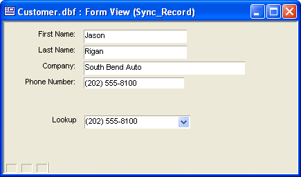
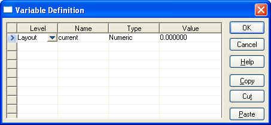
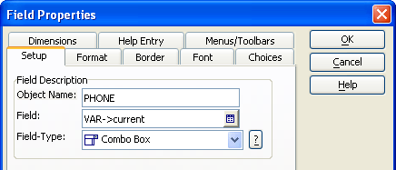
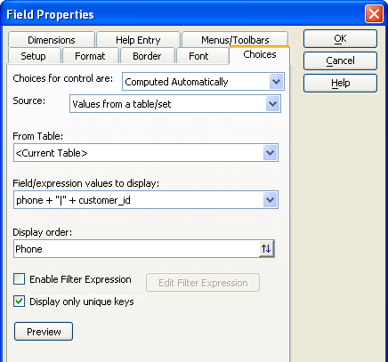
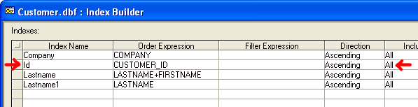

Using a Lookup to Set the Current Record
This topic describes how to use a table lookup to set the current record. The example is based on the Customer table of the AlphaSports sample database.
The following form shows the Firstname, Lastname, Company, and Phone fields from the Customer table. In addition, there is a drop down combo box with the label "Lookup". The lookup field displays unique field values from the Phone field. When you select a phone number if the lookup field, the other controls on the form update automatically to show fields from the same record.

To create a similar capability:
In the Form Editor click to display the Variable Definition dialog. Create a numeric variable named current and click OK to save your input.

Drag the current variable from the Drag Drop List onto the form.
Right click the new control and select Properties... .
Display the Setup tab.
Change the Field-Type to "Combo Box".

Display the Choices tab.
Change the Choices for control are to "Computed Automatically".
Select "Values from a table/set" in the Source list.
Select "
" in the From Table list. Enter phone + "|" + customer_id in the Field/expression values to display control.
 Note : This expression
causes the control to display the phone field
but return the value in the customer_id field.
Note : This expression
causes the control to display the phone field
but return the value in the customer_id field.
Enter phone in the Display order control.
Check Display only unique keys.
Click OK to return to the Form Editor.

Right click the new control and select Events > OnChange.
Enter the following Xbasic code. This code reads the customer_id value in the current variable, finds the matching record, reads that record, and then refreshes the form to show the new values.
|
dim id as C dim tbl as P tbl = table.current() tbl.fetch_goto(current) parentform.resynch() |
Click
 and return to the Form Editor.
and return to the Form Editor.Close the Form Editor.
Display the Tables/Sets tab of the Control Panel.
Select the Customer table and select Design > Indexes.
Create an index for the customer_id field.

Click Build... and Close.
View your form. Now, when you select a phone number in the lookup control, the other fields displayed on the form will be from the same record.
See Also
TABLE.CURRENT(), <TBL>.FETCH_GOTO(), <OBJECT>.RESYNCH()